The pastry window
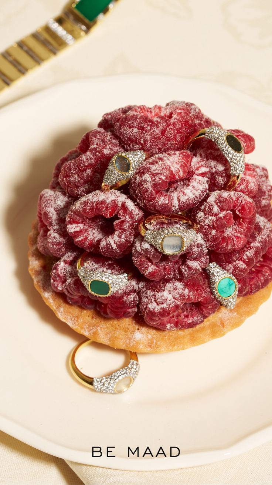
Sunny, Gigi and Holi rings, Be Maad. Photo: Be Maad, via Pinterest.
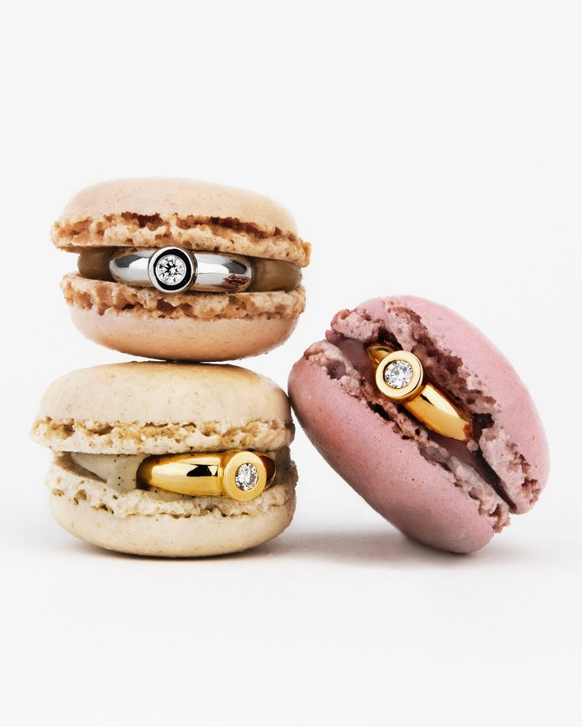
Leitão & Irmão. Photo: @leitaoeirmao, via Pinterest.
We swap display stands for a real bakery window. A ring resting on a pain au chocolat, a necklace wrapped around a baguette, earrings lined up like macarons, a bracelet slipped around a croissant.
Each piece gets a chalk label, like a pastry: a name, a material, a price. You're no longer looking at jewellery behind glass, you want to take a bite.
The counter and the paper bag
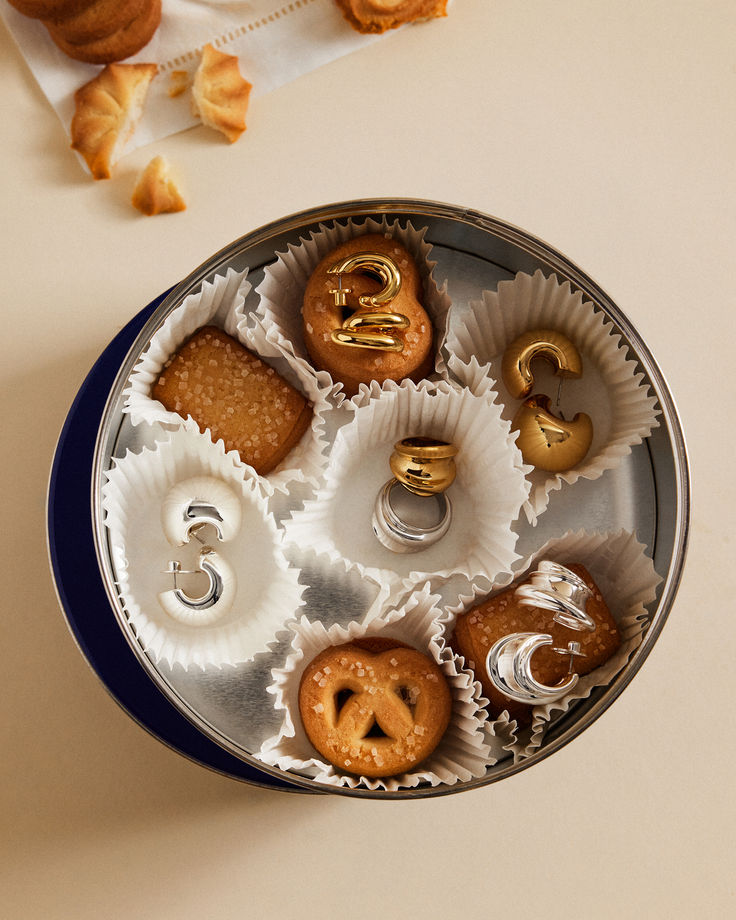
Photo: via Pinterest.
At the door, guests take a ticket, just like at the baker's. Behind the counter, staff in branded aprons serve the jewellery with pastry tongs, wrap it in tissue paper and slip it into a small kraft bag with the brand's logo.
It's funny, it's unexpected, and it completely breaks the slightly intimidating codes of fine jewellery. Everyone leaves with their bag in hand, and the photo to match.
The surprise batch
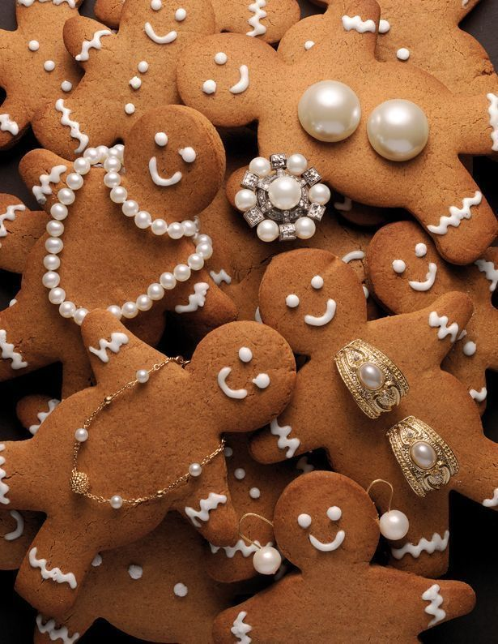
Photo: via Pinterest.
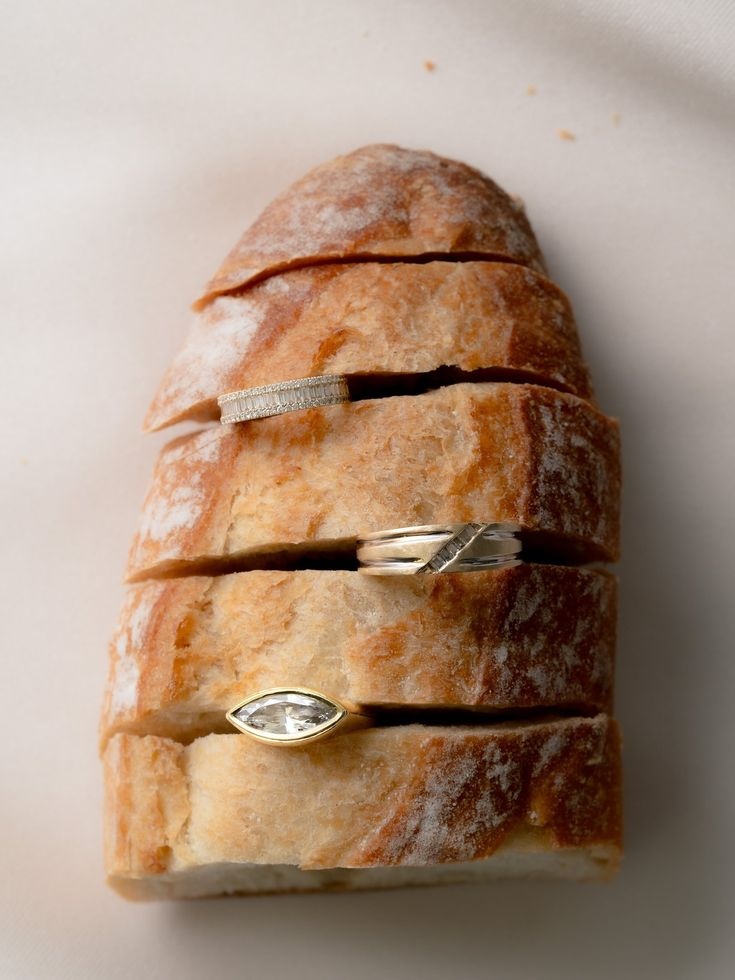
Photo: iyk Studio, via Pinterest.
For the big moment, we ring the bell: "the batch is ready". A baker comes out of the bakehouse with a large tray, and on it, among croissants still warm from the oven, is the new collection.
The reveal happens at bakery pace, with the smell, the warmth and the anticipation. It's the shot every guest will film at the same time.
The knead-and-engrave workshop
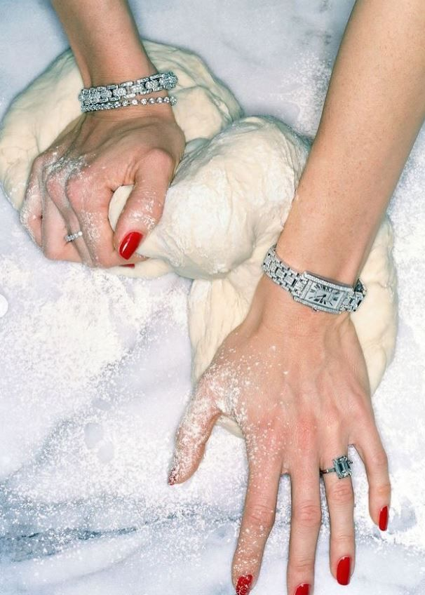
Photo: via Pinterest.
On one side, a baker shows how to shape a croissant. On the other, a craftsman engraves initials on a pendant or a ring. Guests move from one station to the other and leave with their pastry and their personalised piece.
Two crafts, two precise gestures: the comparison tells the story of quality craftsmanship better than any speech.
Content designed for Reels
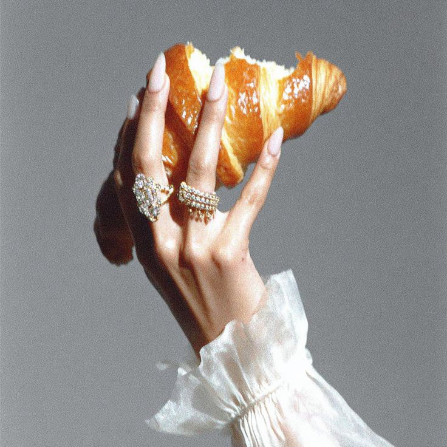
Photo: via Pinterest.
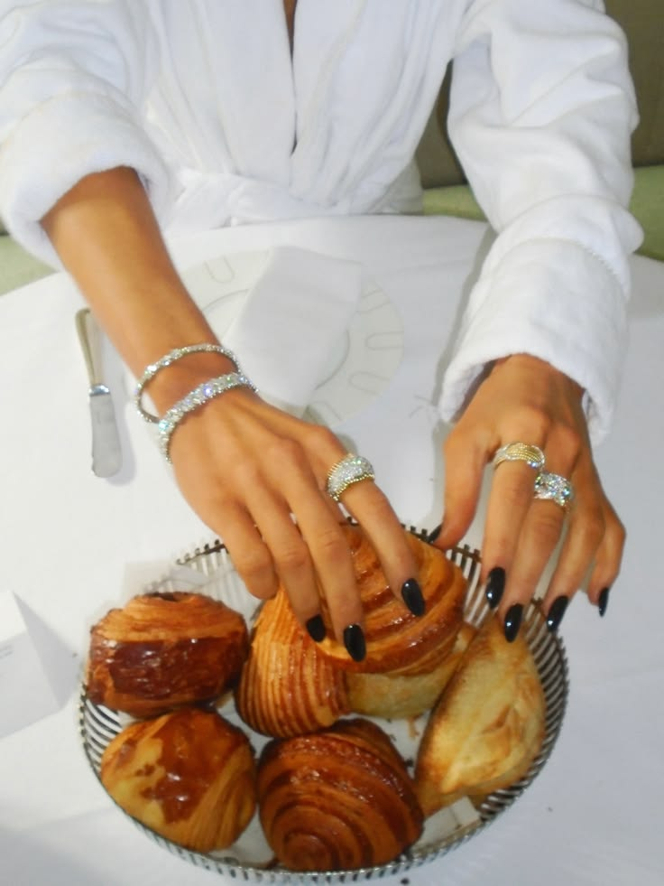
Photo: via Pinterest.
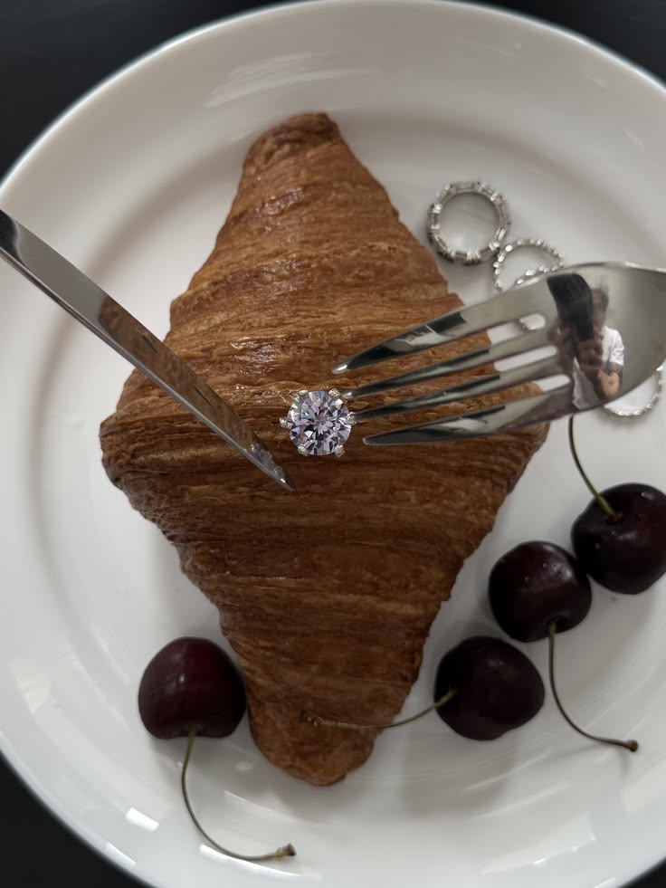
Photo: via Pinterest.
Reels that play with everyday objects are doing really well right now, and jewellery is a perfect fit: a ring slid onto a croissant, a necklace pulled out of a paper bag, the crunch of a pastry, gold gleaming next to a golden crust.
So we design the venue like a set: warm late-morning light, a counter you can film from every angle, and a ready-made shot list for invited creators. The result: dozens of Reels in line with your campaign, filmed on the same day.
The DJ behind the counter
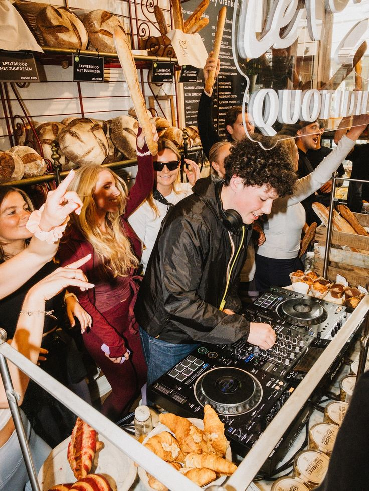
Bakery DJ sets are the trend of the moment: people dance between the baguettes, coffee or glass in hand. For the launch party, we set up the decks on the counter among the croissants, and the bakery becomes a dancefloor.
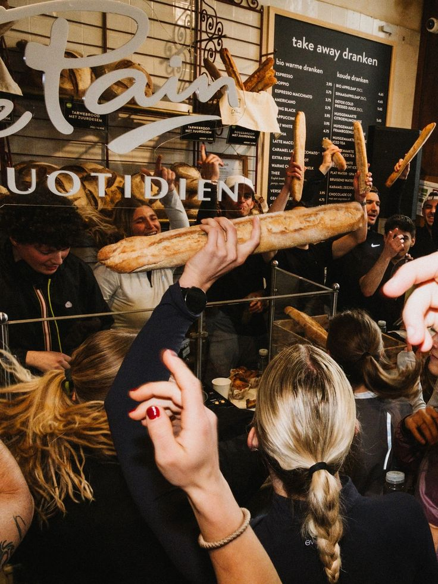
DJ set at Le Pain Quotidien. Photos: @lepainquotidienbe, via Pinterest.
Then we move on to dinner at a long table between the bread shelves: country loaves to share, dishes served as if straight from the bakehouse, and the jewellery still in the window. The morning bakery becomes the evening club.
And the gifting?
We finish with a pastry box tied with string: inside, a pastry, the jewellery in its case and a hand-written card. A gift made to be unboxed on camera, and one nobody forgets.
Frequently asked questions
How do you organise a jewellery collection launch?
Start from the collection's story, pick a concept that makes it accessible and memorable, invite press and content creators, and design the venue to produce images. A pop-up of a few days, a launch party and a personalisation workshop can be combined.
Why borrow an everyday shop for a luxury launch?
Because the contrast surprises: a precious piece presented like a pastry breaks the intimidating codes of luxury, creates an instantly recognisable image and makes people want to share. It's a very effective format on Instagram and TikTok.
What event format works for launching jewellery with influencers?
A short, immersive format: a strong concept, a reveal made to be filmed, a workshop where guests personalise their piece and gifting designed to be unboxed on camera. Every space should give people a reason to film.